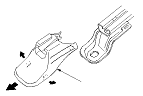
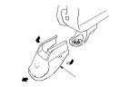
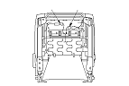
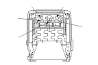
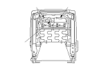
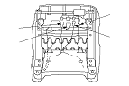
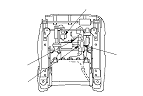

|
For some models: SRS components are located in this area.
Review the SRS component locations LHD,
SRS component location RHD
and
the precautions and procedures
before performing repairs or service.
NOTE
|
Manual/manual height adjustable

4-way power/8-way power

|
|
|
Manual seat without OPDS unit

Manual seat with OPDS unit (RHD)

Manual height adjustable seat

4-way power seat with OPDS unit (RHD)

8-way power seat

|